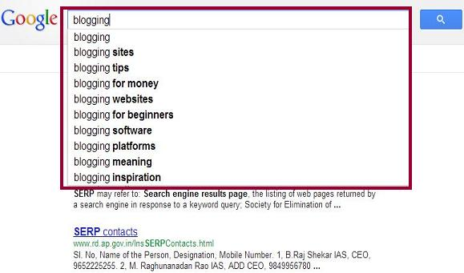
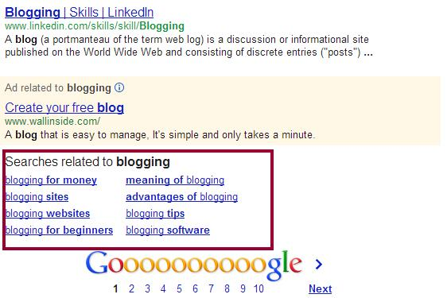
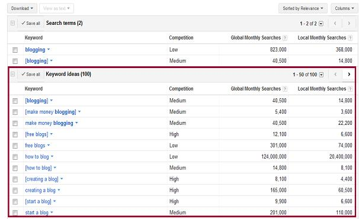

Before you start reading below methods to learn how to find LSI keywords, I would highly recommend you to read my previous post about What are LSI keywords. In the previous post I discussed importance of LSI words over high keyword density. I also shared how such keywords can help to improve on page and off page seo.
The above was all about my old post. In this post I will discuss how you can find LSI keywords without any plugin.
3 Ways to find LSI keywords
1) Search engine LSI keywords suggestion
The most common and easiest way to find related keywords is Google search. In the below screenshot you can see I just typed word “blogging” in search engine and it gave me a quick list of words/phrases that matches to word “blogging”. These words are nothing but LSI words, which you can use in your post. Just type your main keyword in Google search and note down all the words displayed by it. That’s it you now have a list of related keywords. If the list has very few keywords then you can repeat the same process with the words displayed by Google.

2) Search engine related keywords results
It is quite similar to the above method. The only difference is that in that case you actually need to press enter for your main keyword search. At the end of the first page you will be presented with the words/phrases that are related to the searched term.

3) Google Adwords tool
I believe everybody is aware of this free tool. Most of the peoples use this to find monthly hits for a specific keyword or phrase. We can also use this to find LSI keywords. It’s quite simple, whenever any keyword being searched on Google adwords tool it shows “keyword ideas” at the end. These keywords are nothing but latent semantic indexing(LSI) keywords.

Let me know if you have any questions about the topic. If the terms used in this post sounds confusing to you then please refer the linked post at the beginning of this post.
4) Using SEOPressor Plugin
Read: SEOPressor v5 review
All the above methods requires manual effort, there is another way to get LSI – SEOPressor V5 comes with a feature which can automatically fetch LSI for main keyword (you can specify at max 3 keywords at a time for plugin analysis). This plugin works like a charm and doesn’t requires any manual work. Read more about it at how to find LSI keywords using SEOPressor.
Where do i put the LSI keywords?
Here?
OR only in the content text
Another useful LSI keyword tool would be LSIKeywords.com. It also helps marketers to find their latent semantic keywords.
appreciable content
but after using the keywords provide by google adwords
when we check our seopressor, it still says that inculde LSI keywords, since i m not using a premium version of seopressor so i am not eligible to use their LSI tool, kindly tell me what is the difference in SEOpressor LSI keywords and google adwords LSI keywords
Both are same. BTW Google keyword tool has been replaced by Keyword planner tool, you can very well use this.
Find it here: http://adwords.google.com/keywordplanner
Well written and informative article for the newbie SEO or blogger. Latent Semantic Indexing keywords are great for ranking higher on SERP. They actually help search engines to understand what the article is all about. LSI keywords should be placed within page content (@Jan Willem Frinking).
Good stuff on LSI, additionally I would like to add that do not just stuff all LSI keywords in your content. Always measure the competition and search volume of any keywords you want to use. Keyword analysis is very important for successful optimization but be aware of over optimization and keyword stuffing. Do not just add keywords they should be meaningful and should come in the flow of writing.
Hello Mr Singh,how are you?
1)What should the relationship between the main keyword and the LSI be?
2)How many should we use in a 400-500 words article?
3)My main question is: Will it be okay to use LSI KEYWORDS with higher search volume than the root keyword?
Thank you